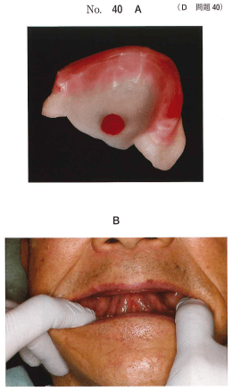
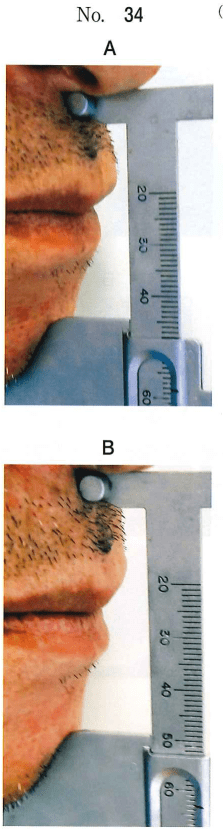

顎間関係とは、上下顎の三次元的な位置関係を指す。無歯顎患者では歯を指標とした記録が不可能なため、咬合床を用いて顎間関係を記録し、咬合器上に再現する。
咬合高径（occlusal vertical dimension）は、上下顎が咬合接触した状態での顔面の垂直的高さである。
| 分類 | 方法 | 内容 |
|---|---|---|
| 形態的根拠 | 顔面計測 | Willis法、マックギー法など |
| 顔貌の観察 | 老人様顔貌の改善を指標 | |
| 機能的根拠 | 下顎安静位 | 安静空隙から算出 |
| 最大咬合力 | 咬合力が最大となる高径 | |
| 発音 | /m/音、/s/音を利用 |
下顎安静位（mandibular rest position）は、上体を起こして咀嚼・嚥下・発語などの口腔機能を営まず、生理的に安静な状態にあるときの下顎位である。
下顎安静位での上下顎の歯列間に生じる一定の垂直的空隙を安静空隙（freeway space）という。
| 発音 | 下顎位 |
|---|---|
| /m/ | 下顎安静位 |
| /s/ | 最小発音間隙（closest speaking space） |
水平的顎間関係の記録では、中心位（下顎頭が関節窩内の最上方かつ前方位にある状態）を記録する。ゴシックアーチ描記法やチェックバイト法が用いられる。
水平的顎間関係の記録時に使用する装置。下顎の前方偏位を抑制し、正確な中心位を記録するために用いる。
70歳の男性。義歯を紛失したため新製を希望して来院した。上下顎全部床義歯製作中に用いた装置の写真（別冊No.40A）と、この装置を用いた治療中の写真（別冊No.40B）を別に示す。
この装置の目的はどれか。1つ選べ。

【解説】写真はセントリックトレーサー（ゴシックアーチ描記装置）。水平的顎間関係の記録時に下顎前方偏位を抑制し、正確な中心位を記録するために使用する。
全部床義歯製作過程の咬合高径決定時に使用する器材はどれか。1つ選べ。
【解説】バイトゲージはWillis法で咬合高径を決定する際に使用する顔面計測器具。フェイスボウは上顎模型の咬合器装着、モールドガイドは人工歯選択、ゴシックアーチトレーサーは水平的顎間関係の記録に使用する。
62歳の男性。入れ歯が低くなって食事がしづらいことを主訴として来院した。現有の上下顎全部床義歯は6年前に装着したという。義歯装着時の検査の写真（別冊No.34A）と下顎安静時の検査の写真（別冊No.34B）を別に示す。
義歯を新製する際の咬合高径挙上量で適切なのはどれか。1つ選べ。

【解説】下顎安静位での垂直距離から現在の咬合高径を引いた値が安静空隙。正常な安静空隙は2〜3mm。写真から計測した値を元に、適切な安静空隙を確保できる挙上量を選択する。
発音時に下顎安静位をとるのはどれか。1つ選べ。
【解説】/m/音を発音させると上下口唇が接触し、下顎安静位を誘導できる。/s/音は最小発音間隙の測定に用いる。/f/や/v/は上顎前歯と下唇の関係の確認に用いる。